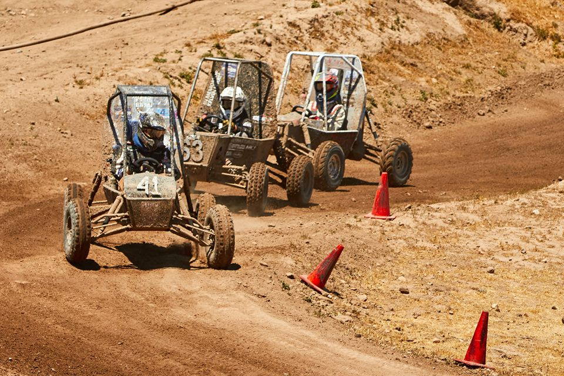

Building the Legacy
Founded in 2011, the team has designed, manufactured, and competed annually at Baja SAE competitions across the continent. At the end of each academic year, our team competes internationally in the Baja SAE collegiate design series. Organized by the Society of Automotive Engineers (SAE) and taking place in the United States, these intercollegiate competitions take place over four days. There are an array of events to be judged in; scores are based on the team’s engineering design, business presentation and vehicle performance on the track over punishing terrain.

About Us
OUR WORK
Fully design, manufacture, and race a single seater ATV at the International Baja SAE Collegiate Series
OUR TEAM
A group of UBC students passionate about off-road racing and discovering engineering design beyond lecture halls.
Become a Partner
As a fully student-led team, our budget is primarily comprised of industry sponsorships and university funding. Additional resources enable our team to optimize designs, utilize advanced manufacturing and testing techniques, and ultimately improve vehicle performance. We now look to you to help further our passions and aspirations to rank among the top 10.